En este documento se describe la apariencia de la aplicación web Bistro FDI, con bocetos digitales para las distintas páginas que verán los distintos tipos de usuarios: Cliente, Mesero, Cocinero y Gerente.
Estos bocetos fueron diseñados a través de Excalidraw, proporcionando una visión clara de cómo se verá la aplicación.
Cada boceto se acompaña de una descripción de los elementos visibles, de la navegación entre páginas (mediante las flechas en los bocetos) y de cómo se implementan paso a paso las funcionalidades principales desde la página principal.
Estos diseños son iniciales y podrán evolucionar en fases posteriores del proyecto.
Para mayor facilidad de visualización, se recomienda abrir este enlace que dirige a la aplicación web de Excalidraw.
Esta vista muestra dos partes: la interfaz general para cualquier usuario y la interfaz que ve el cliente y el gerente. La vista general de todos los usuarios, permite que haya iniciado sesión y el acceso a “Mi Perfil”, donde puede consultar y modificar sus datos y cerrar sesión, solo los clientes pueden ver pedidos actuales y su historial, El avatar del usuario se muestra en la parte superior derecha para identificar la sesión.
El cliente puede explorar la carta de productos organizada por categorías, añadir productos al carrito, confirmar pedidos, seleccionar la forma de pago (simulación con tarjeta o al camarero) y consultar el estado de sus pedidos actuales y pasados. La interfaz permite ver precios, disponibilidad, ofertas y descuentos, facilitando una experiencia de compra sencilla y directa desde la página principal.
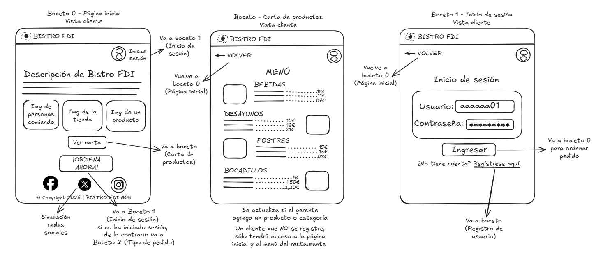
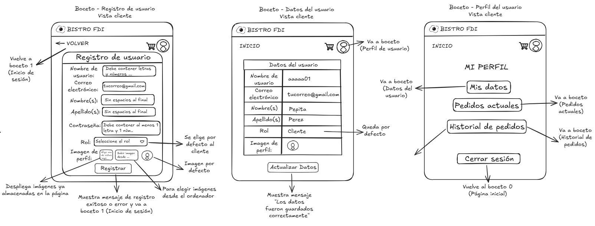
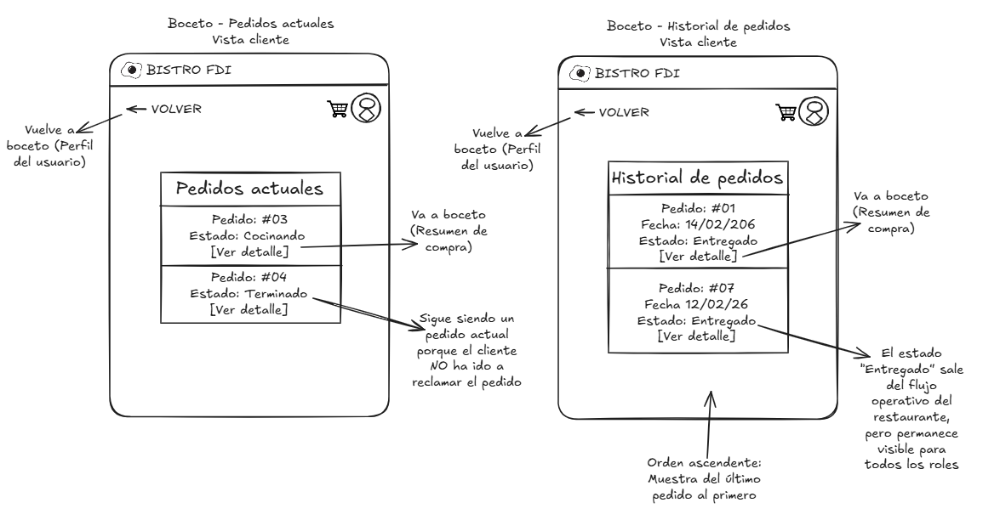
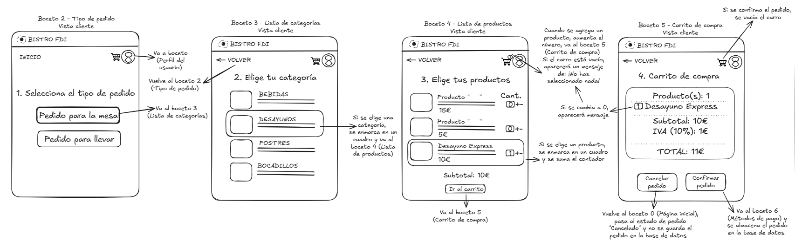
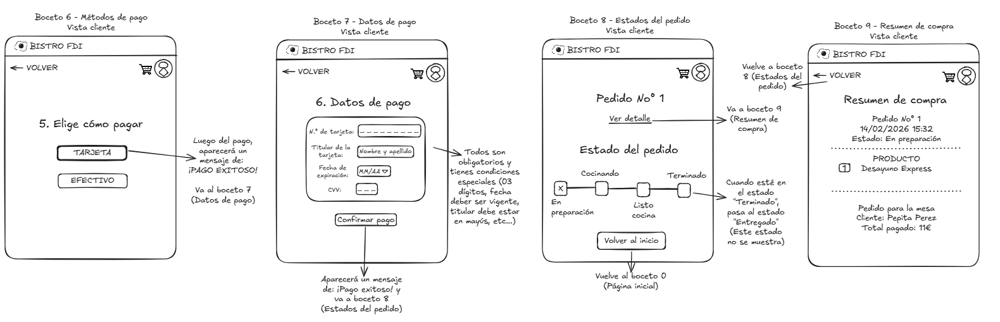
Esta vista está diseñada para que el cocinero gestione de manera eficiente los pedidos asignados. Permite visualizar los pedidos en estado “En preparación”, consultar el detalle de cada uno (productos, cantidades y observaciones) y cambiar su estado a “Terminado” una vez estén listos. La interfaz es clara y sencilla, priorizando la rapidez y organización en cocina, mostrando únicamente la información necesaria para preparar los platos correctamente y mantener el flujo de trabajo ordenado.
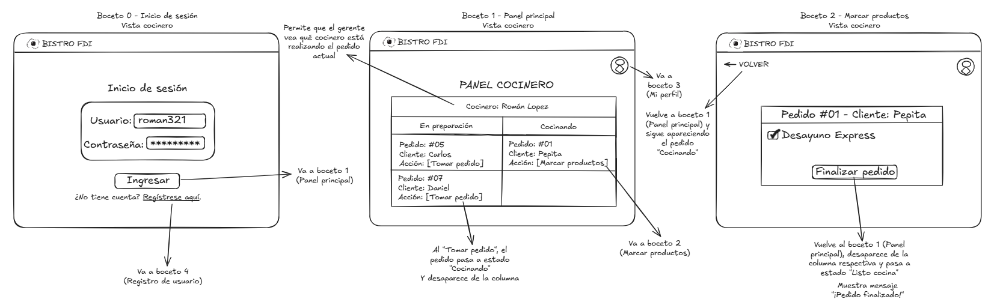
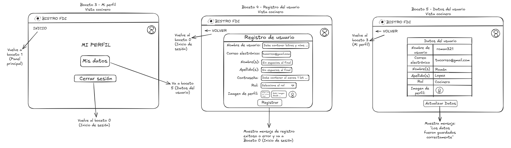
Diseñada para tablets en formato horizontal, esta vista permite al mesero gestionar los pedidos de manera rápida. Sus funciones principales son cobrar pedidos en estado “Recibido” y entregarlos al cliente, cambiando su estado a “En preparación” o “Terminado” según corresponda. El avatar del mesero se muestra para identificar la sesión y evitar confusiones al usar la tablet compartida.
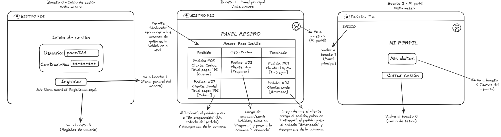
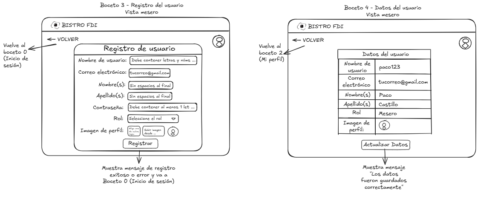
Optimizada para escritorio o portátil, la vista del gerente permite gestionar usuarios (modificar roles), productos, categorías, ofertas y recompensas, así como consultar pedidos actuales o históricos. El gerente tiene acceso a todo el sistema, lo que le permite ir a cualquier vista de cualquier usuario.
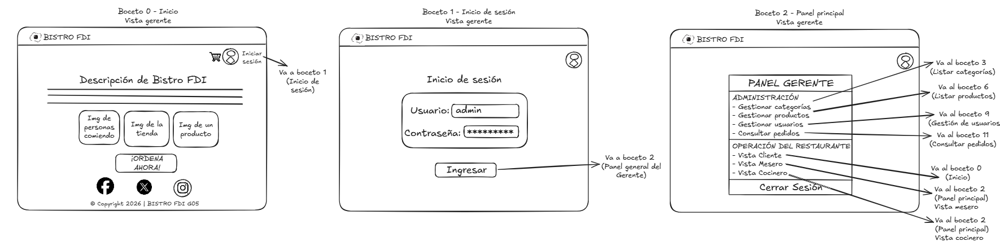
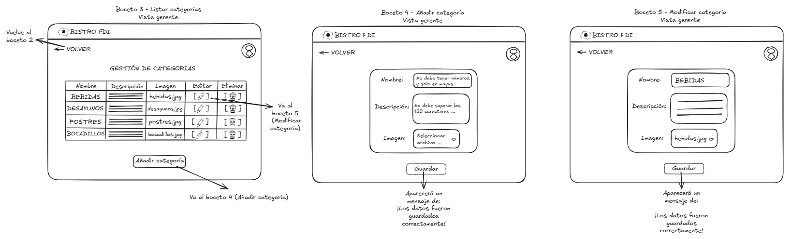
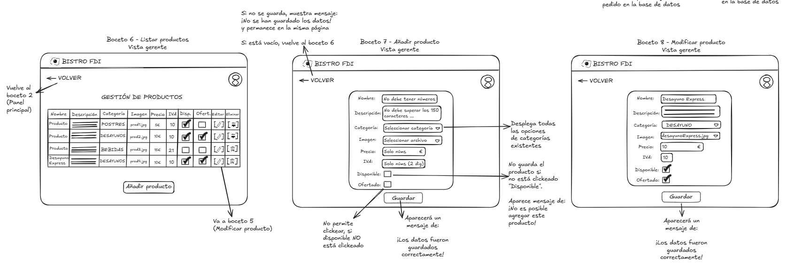
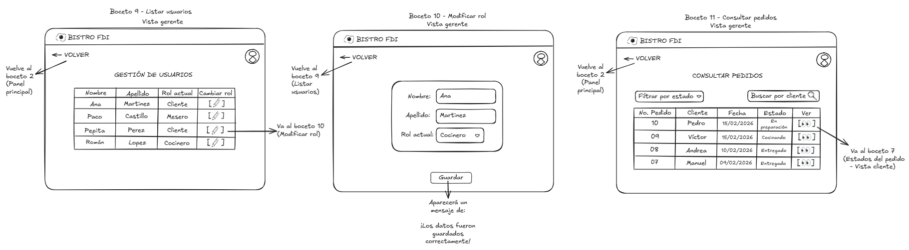
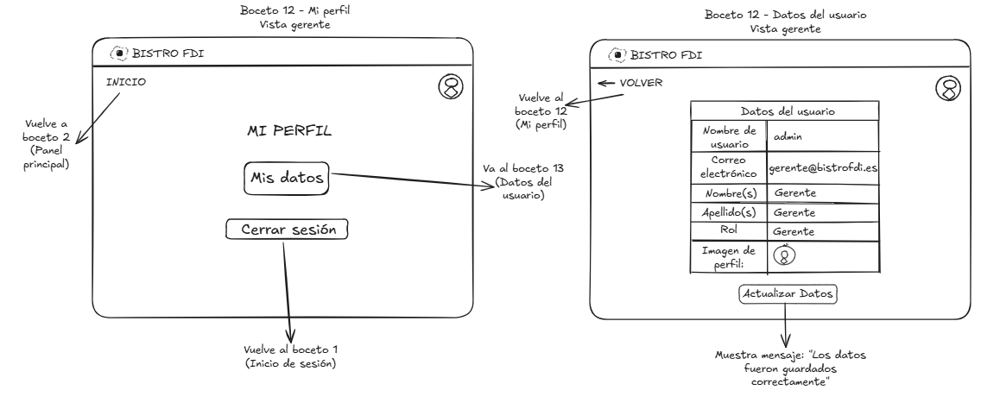